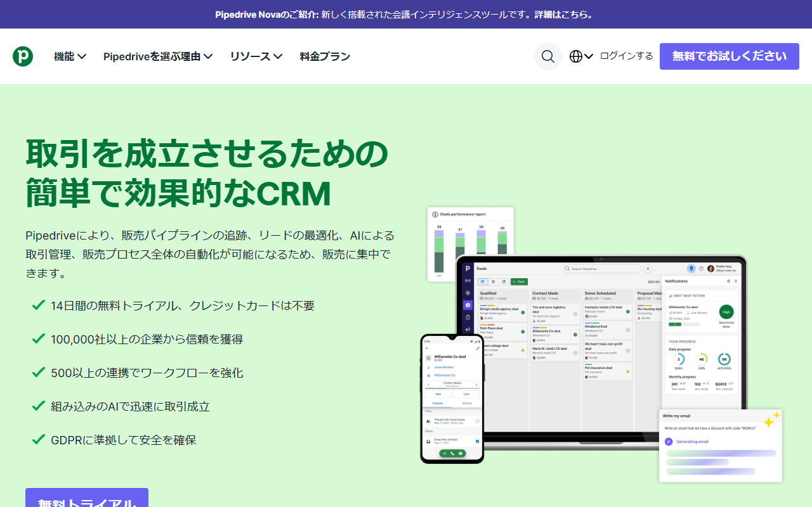
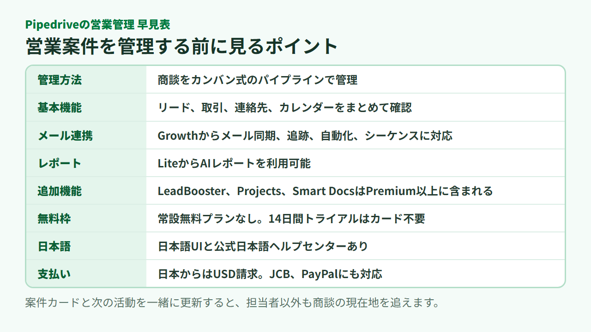

Pipedriveとは？機能・料金・評判、日本語対応と向いている会社を解説
Pipedrive（パイプドライブ）は、見込み客から受注までの商談を管理するCRM/SFAです。営業案件の進み具合と、次に取る行動をチームで共有できます。
導入前に迷いやすい機能、料金、日本語対応をまとめました。評判や向いている会社、HubSpotとの選び分けも紹介します。
Pipedriveの概要と向いている会社
Pipedriveは、商談を段階ごとに並べて管理する営業向けCRM/SFAです。止まっている案件に気づき、次の行動を明確にしたい会社に向きます。
- 製品：営業案件を管理するCRM/SFA
- 管理方法：カンバン式のパイプライン
- 無料枠：常設なし、14日間試用可
- 日本語：UIとヘルプに対応
- 契約：日本からはUSD請求
- 向く会社：営業手順を共有したいチーム

日本語の製品ページで、無料トライアルの入口と画面イメージを見られます。
Pipedriveは営業案件をパイプラインで管理するCRM/SFA
Pipedriveでは、商談をカードとして登録し、進捗に合わせて段階を移します。案件ごとの連絡先や予定、次の活動も一か所にまとまります。
顧客情報を保存するだけの名簿とは違い、商談の現在地や次に動く担当者、その行動まで管理できます。
検索で見かけるPipedrive Inc.は、米国ニューヨークに本社を置くグループ法人です。Pipedriveはエストニアで生まれ、営業担当者の視点から作られたCRMとして提供されています。
向いている会社と見送った方がよい会社
小規模から中規模の営業チームで、案件の状況を担当者しか把握していない会社に合います。毎週の営業会議のたびに表計算ファイルを集め直している場合も候補です。
一方、永久無料のCRMを探している会社には向きません。国内ベンダーによる個別支援を最優先する場合も、直販と国内パートナーの契約内容を比べる必要があります。
Pipedriveの主な機能を営業の流れで確認
リードの取り込みから案件更新、連絡、自動化、レポートまでを一つの流れで管理できます。ただし、使える機能はプランによって異なります。
見込み客と連絡先を取り込み、案件を作る
Liteには、リード、取引、連絡先、カレンダー、パイプラインの基本管理が含まれます。問い合わせを商談に変え、担当者と金額、進行段階を登録するところが出発点です。
Webフォームなどで見込み客を集めるLeadBoosterは、LiteとGrowthでは追加料金です。PremiumとUltimateには含まれます。
パイプライン上で案件と次の行動を更新する
案件カードを「初回連絡」「提案」「交渉」など自社の営業段階に置きます。進展があればカードを移し、次の電話や打ち合わせも登録する流れです。
担当者ごとの記憶に頼らず、止まっている案件をチームで見つけられます。段階名は、自社で実際に使う営業手順に合わせるのが基本です。
メール・予定をまとめ、停滞を自動で知らせる
Growthではメール同期と追跡、自動化、シーケンス、売上予測を利用できます。商談記録とメールを一か所に残し、定型的な連絡を一連の手順として設定できます。
Liteで案件管理から始めるか、メール連携まで必要なためGrowthを選ぶかが、最初の分かれ目です。
AIレポートとダッシュボードで営業を振り返る
LiteにはAIレポートが含まれます。案件の件数や進行状況を見返し、どの段階で止まりやすいかを営業会議で共有できます。
レポートの土台になるのは、入力した案件や活動です。数字を振り返る前に、入力項目と更新する担当者を決めておくと使いやすくなります。
追加機能と外部サービス連携を使う
LeadBooster、Projects、Smart DocsはPremiumとUltimateに含まれます。LiteとGrowthでは追加料金がかかります。メール配信のCampaignsとWeb Visitorsは、全プランで別料金です。
外部サービスとの接続はMarketplaceから探せます。契約前にサービス名で検索し、使いたいサービスと連携できるか、費用はいくらかを照合してください。

公式ページから、プランごとの機能と外部サービス連携の入口をたどれます。
Pipedriveの料金プランと14日間の無料トライアル
常設の無料プランはなく、有料プランは4種類です。料金は1ユーザー単位で、年払いは契約開始時に1年分をまとめて支払います。
LiteからUltimateまで4つのプラン
円換算は1ドル=157円換算（執筆時点の目安。為替で変動）です。
- Lite：月払いUS$24、年払い月US$14相当（約2,198円）
- Growth：月払いUS$49、年払い月US$39相当（約6,123円）
- Premium：月払いUS$79、年払い月US$59相当（約9,263円）
- Ultimate：月払いUS$99、年払い月US$79相当（約12,403円）
Liteは基本的な案件管理、Growthはメール連携と自動化まで使いたいチーム向けです。PremiumではLeadBoosterなどが基本料金に含まれます。Ultimateでは、セキュリティルールとアラート、データ補完、サンドボックス、延長電話サポートが加わります。細かな権限管理や、本番と分けた検証環境まで必要な会社向けのプランです。
月払いと年払いを切り替えながら、4プランの料金を見比べられます。
無料トライアルはカード登録なしで始められる
無料トライアルは14日間で、開始時にクレジットカードは要りません。試用中に決済情報を追加すると、期間終了後に有料契約へ移ります。
決済情報を追加しなければ、終了後はアカウントへのアクセスが制限されます。試用期間は、自社の営業段階と入力項目を作り、担当者が無理なく更新できるかの確認に使えます。
追加機能は別料金になる場合がある
契約額はプランの席単価だけでは決まりません。LiteとGrowthでLeadBooster、Projects、Smart Docsを加える場合や、Campaigns、Web Visitorsを使う場合は追加費用が発生します。
Pipedriveの評判から分かるメリットと注意点
公開レビューでは、パイプラインの見やすさを評価する声があります。一方、人数や追加機能による費用と、初期設定の手間を気にする声も見られます。
良い評判は画面の分かりやすさと案件管理
Capterraの公開レビューでは、案件を段階ごとに見渡せる点や、進捗を更新する操作の分かりやすさが利点として挙げられています。
担当者ごとに別の表を持っている会社なら、案件の置き場所を一つにまとめられる点が利点です。
気になる評判は費用と設定・連携の手間
同じ公開レビューには、費用や連携、初期設定の負担を気にする声もあります。料金は1ユーザー単位なので、利用者が増えれば総額も上がります。必要な機能によっては、上位プランや追加機能も必要です。
自社に合う項目の設計や、外部サービスとの連携には準備が要ります。導入するだけでは営業記録は揃わないため、誰がいつ案件を更新するかも決めておきます。
口コミだけで決めず、自社の営業手順で試す
レビューは、企業規模や契約プラン、利用した時期によって前提が違います。評価の高低だけで決めるより、自社の案件段階と入力項目を14日間の試用環境で再現すると相性を確かめやすくなります。
Pipedriveの日本語対応と日本からの支払い
製品画面とヘルプセンターは日本語に対応しています。直販はUSD請求ですが、国内パートナーは円建て契約と日本語支援を案内しています。
製品画面とヘルプセンターは日本語に対応
Pipedriveは日本語UIを選べます。公式の日本語ヘルプセンターもありますが、一部の記事は機械翻訳です。
画面が日本語になることと、個別相談を日本語で受けられることは別です。社内だけで設定するなら、必要な手順が日本語ヘルプに載っているかも確かめておきます。
日本語の個別サポート範囲は契約先で異なる
直販はメールと24時間のライブチャット窓口を案内しています。ただし、日本語担当者による個別対応の範囲は公式ページで確認できません。
国内パートナーのMerは日本語サポートを案内しています。設定支援が必要なら、直販とパートナー経由それぞれの支援内容と契約条件を比べてください。
直販はUSD請求、国内パートナーは円建て契約を案内
日本から直販で契約すると、USDで請求されます。Visa、Mastercard、American Express、Discover、JCB、PayPalを利用でき、口座振替は対象外です。
請求書は管理画面のBillingにある履歴から閲覧でき、請求先メールにも届きます。税の扱いは契約形態で変わるため、必要に応じて税理士に確認してください。
日本語ページから無料トライアルへ進み、直販での契約内容を見られます。
Pipedriveの始め方とログイン後の基本操作
無料トライアルへ登録したら、営業段階をパイプラインに設定します。その後、連絡先と案件、次の活動を登録するのが基本的な流れです。
無料トライアルに登録してパイプラインを作る
14日間の無料トライアルは、公式サイトから始めます。カード登録は不要です。登録後は、自社の商談が受注までに通る段階をパイプラインへ設定します。
カードを登録せずに試用を始め、パイプラインの画面を確かめられます。
案件・活動・連絡先を登録して営業を始める
最初に連絡先と案件を登録し、担当者、金額、進行段階を設定します。次の電話や打ち合わせには期限を付け、対応後に案件を次の段階へ移します。
メールやカレンダーを連携する場合は、必要な機能が候補プランに含まれるかを先に確かめます。
アプリ・ヘルプ・開発者向け情報の探し方
ログインはPipedriveの公式ログイン画面から進みます。外出先ではiOS・Androidアプリ、操作で迷ったときは公式ヘルプやAcademyが入口です。
APIやWebhook、Deal IDを扱う担当者にはDeveloper Hubがあります。PipedriveはWebサービスで、外部システムとの接続にはAPIやMarketplaceを使います。オープンソースのCRMを自社サーバーに構築したい会社は、別製品を検討してください。
権限のあるユーザーは、案件や連絡先などをXLSXまたはCSV形式で書き出せます。乗り換えに備えるなら、必要な項目を出力できるか先に試しておくと、移行の可否を判断しやすくなります。
PipedriveとHubSpotなど別のCRMを選ぶ基準
営業案件をパイプラインで管理したいならPipedriveが候補です。期限なしの無料CRMや日本円での料金表示を重視するなら、HubSpotも比べたい製品です。
営業案件の管理を優先するならPipedrive
Pipedriveは、案件の段階と次の活動を営業チームで揃えたい会社に合います。Liteから始め、メール同期や自動化が必要になればGrowth以上を検討できます。
無料で使い続ける製品ではありません。14日間で自社の商談手順を再現し、有料契約に進むかを判断します。
永久無料や部門横断の基盤を求めるならHubSpotも候補
HubSpotには、2ユーザーまで使える無料ツールがあります。決済情報は不要で、日本語UIとJPYの料金表示にも対応しています。
この記事で比べられるのは、無料CRMの条件と表示言語・通貨までです。マーケティングやサポートを含めて選ぶ場合は、必要なHubと機能を揃えたうえで比べてください。無料CRMの条件だけでは、部門横断の基盤に向くかを判断できません。
Salesforce・Zoho CRMとの詳細は直接比較記事で確認
Salesforce・Zoho CRMとの違いは、Pipedrive公式のSalesforceとの比較ページとZoho CRMとの比較ページで機能ごとに確認できます。どちらもPipedrive側の資料なので、各社の公式ページと照らして判断してください。
Pipedrive側では、14日間試用、日本語UIとヘルプ、USD請求、日本から使える決済方法をこの記事で確認できます。移行を想定するなら、スプレッドシートから連絡先、組織、リード、案件、活動を取り込めるかも判断材料です。少量のデータで列の対応と重複を試してから、本移行へ進みます。
Pipedriveについてよくある質問
無料枠、対応端末、解約、障害情報について、導入前に迷いやすい点を補足します。
Pipedriveに永久無料プランはありますか
ありません。無料で使えるのは14日間のトライアルで、開始時にクレジットカードは不要です。
Pipedriveはスマートフォンやデスクトップで使えますか
iOS・Androidアプリがあり、スマートフォンから利用できます。パソコンでは、ブラウザからのログインが基本です。
Pipedriveの解約とダウングレードはいつ反映されますか
解約後も請求期間の末までは利用できます。年払いの未使用期間は返金されません。
プランのダウングレードと席数の削減は、次の請求周期から反映されます。解約したアカウントは6か月後に完全削除されます。
Pipedriveが動かないときはどこで障害情報を確認しますか
ログインできない、画面が更新されないといった問題が広く起きている場合は、Pipedriveの公式ステータスページを見ます。自社だけで起きているなら、ブラウザと接続環境をそれぞれ確認してから公式ヘルプへ進みます。
まとめ
営業案件と次の行動をパイプラインで共有したい会社なら、Pipedriveは有力な候補です。期限なしの無料CRMを優先する会社は、HubSpotなども比べてください。
- 営業案件の管理に軸を置いたCRM/SFA
- 常設無料はなく、14日間トライアル
- 日本語UIと日本語ヘルプあり
- 直販はUSD請求
- 日本からJCBとPayPalも利用可能
- 追加機能とプラン差は契約前に確認
無料トライアルで自社の案件段階を作り、担当者が無理なく更新を続けられるか、実際のデータを少量入れて試せます。